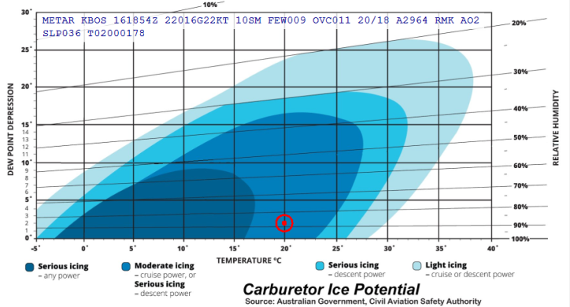

FLIGHT ENVIRONMENT / EDUCATION
Carburetor Ice Potential
Starting with KochChart version 4.0.3, a chart indicating the potential for carburetor icing is available. This chart is based on the carburetor icing probability chart published by the Civil Aviation Safety Authority (CASA) of Australia. Below is an image of how KochChart displays the carburetor icing potential based on a METAR (temperature and dew point depression):

How does this chart differ from the "new" U.S. NTSB chart? Not a bit. Well, they used different colors, but it appears they adopted the CASA chart. The FAA also has a few versions of carburetor icing charts. A simple one is Figure 7-12 in FAA-H-8083-25C, the Pilot's Handbook of Aeronautical Knowledge (PHAK). Another is in their "Winter Flying Tips" pub. But their most detailed version is in FAA-H-8083-28A, the Aviation Weather Handbook as Figure 20-3. This chart, when the axes are converted to those of the CASA/NTSB chart, is seen to show different icing probability regions, but not drastically so. The trends are the same. See the comparisons below (click on any chart to enlarge it).